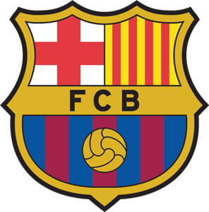
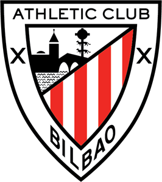

Dit is Real Madrid CF, het is de club met de meeste kampioenschappen ooit in de La Liga, het ligt in Madrid, Spanje. Hieronder staat nog meer informatie over deze ploeg.
Dit is Real Madrid CF, het is de club met de meeste kampioenschappen ooit in de La Liga, het ligt in Madrid, Spanje. Hieronder staat nog meer informatie over deze ploeg.
- Aantal Kampioenschappen: 34
- Aantal Punten Aller Tijden: 1255
- Win Percentage: 71%
- Gemiddeld Aantal Punten Per Wedstrijd: 2.29
- Punten in 2021/22: 43
- Positie op dit moment: 1
- Doelsaldo Aller Tijden: 827
 Dit is FC Barcelona, het is de club met de op een na meeste kampioenschappen ooit in de La Liga, het ligt in Barcelona, Spanje. Hieronder staat nog meer informatie over deze ploeg.
- Aantal Kampioenschappen: 26
- Aantal Punten Aller Tijden: 1269
- Win Percentage: 71%
- Gemiddeld Aantal Punten Per Wedstrijd: 2.31
- Punten in 2021/22: 28
- Positie op dit moment: 7
- Doelsaldo Aller Tijden: 954
 Dit is Athletic Bilbao, het is de club dat 3e ligt qua meeste kampioenschappen ooit in de La Liga, het ligt in Bilbao, Spanje. Hieronder staat nog meer informatie over deze ploeg.
- Aantal Kampioenschappen: 11
- Aantal Punten Aller Tijden: 764
- Win Percentage: 37%
- Gemiddeld Aantal Punten Per Wedstrijd: 1.39
- Punten in 2021/22: 24
- Positie op dit moment: 10
- Doelsaldo Aller Tijden: 5
 Dit is Atletico Madrid, het is de club dat 4e ligt qua meeste kampioenschappen ooit in de La Liga, het ligt in Madrid, Spanje. Hieronder staat nog meer informatie over deze ploeg.
Dit is Atletico Madrid, het is de club dat 4e ligt qua meeste kampioenschappen ooit in de La Liga, het ligt in Madrid, Spanje. Hieronder staat nog meer informatie over deze ploeg.
- Aantal Kampioenschappen: 8
- Aantal Punten Aller Tijden: 1024
- Win Percentage: 56%
- Gemiddeld Aantal Punten Per Wedstrijd: 1.9
- Punten in 2021/22: 29
- Positie op dit moment: 5
- Doelsaldo Aller Tijden: 1042